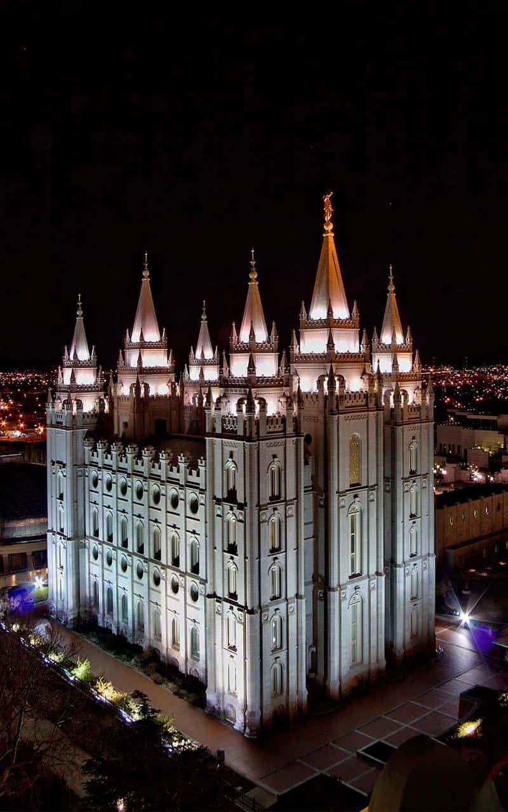
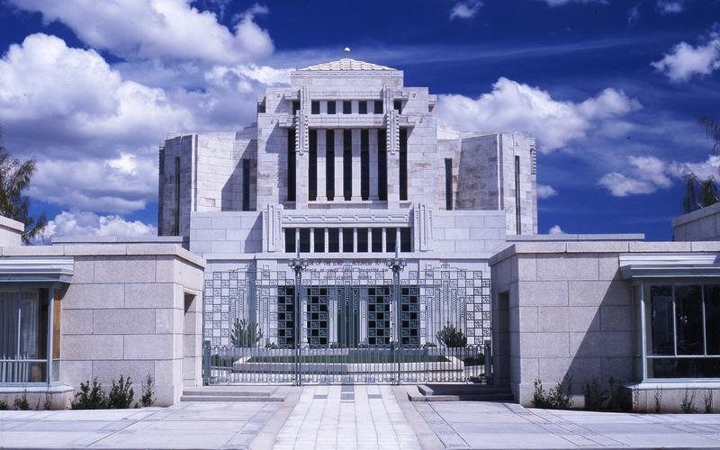
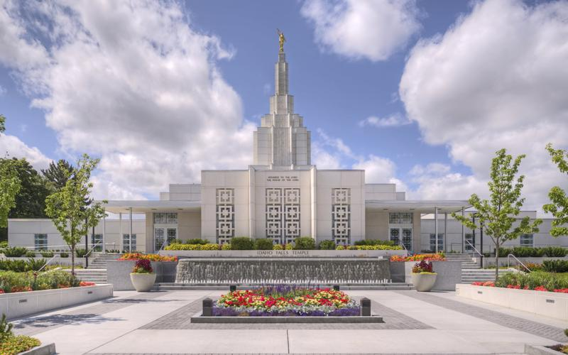
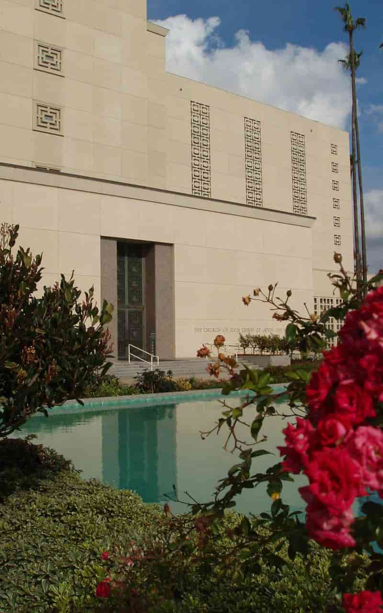
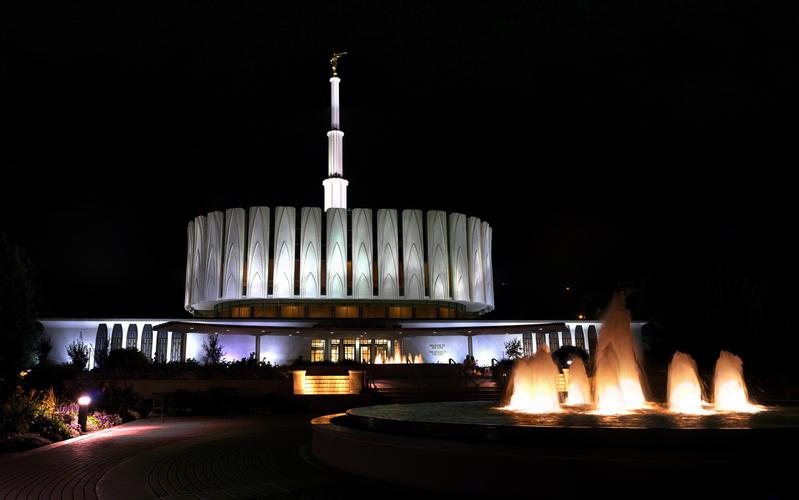
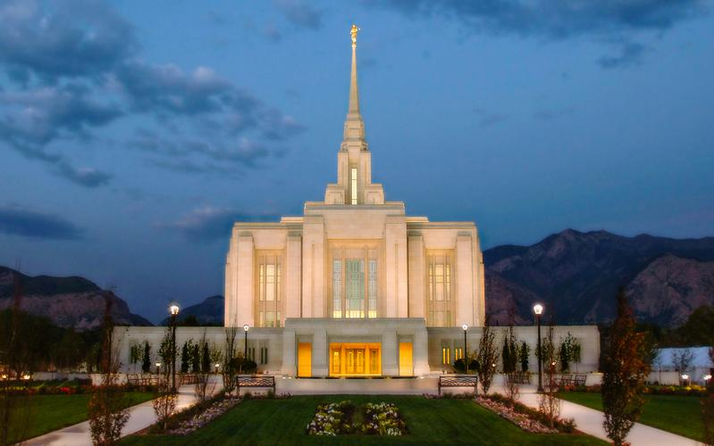

Temple Album
☰
Home
Old
New
Large
Small
Home

Salt Lake Temple

Cardston Alberta Temple
Mesa Arizona Temple

Idaho Falls Idaho Temple
Bern Switzerland Temple

Los Angeles California Temple
Oakland California Temple

Provo Utah Temple

Ogden Utah Temple